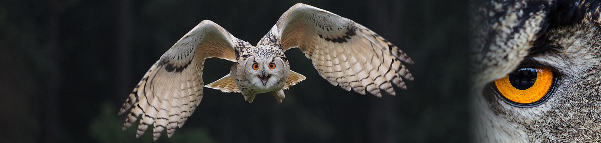

Conservation of Minnesota's Owls
Minnesota is home to twelve species of owls, making it one of the most owl-diverse states in the nation. However, these remarkable birds face numerous challenges that threaten their continued survival in the North Star State.
Current Challenges
Owl populations across Minnesota face significant threats from habitat loss and climate change. The loss of mature forests poses particular concerns for species like the Barred Owl and Boreal Owl, which depend on old-growth timber for nesting sites. From 2010 to 2014, nearly 400 square miles of forest, wetlands, and grasslands were lost in Minnesota's upper Mississippi River watershed alone, representing one of the fastest rates of land conversion in the country.
For some species, the situation is even more dire. The Burrowing Owl has been listed as Endangered in Minnesota since 1984, and an attempted reintroduction program was ultimately unsuccessful. This species no longer breeds regularly in the state, with only occasional sightings in northwestern Minnesota.
Protection Under the Law
In 1972, all birds of prey were included in protections provided by the 1918 Migratory Bird Treaty Act, which prohibits harming or harassing owls without proper permits. This federal protection has been crucial in helping owl populations recover from historical threats like hunting and pesticide use.
Active Conservation Efforts
Several organizations work tirelessly to protect Minnesota's owls. The International Owl Center in Houston, MN, promotes owl education and advocacy and hosts the annual Minnesota Festival of Owls. The University of Minnesota Raptor Center rehabilitates injured owls and conducts important research on raptor health and behavior. The Minnesota Department of Natural Resources monitors owl populations and manages critical habitat across state lands. Data can be found on the Minnesota Dept of Natural Resources: Birds of Minnesota page.
The Western Great Lakes Region Owl Survey, launched in 2005, uses randomized routes to monitor nocturnal raptor populations across Minnesota and Wisconsin. This collaborative effort provides valuable data on owl distribution and population trends.
For species like the Great Gray Owl and Boreal Owl, conservation priorities include protecting and restoring old-growth forests and prioritizing the conservation of mature forest habitats. Some programs have explored the use of artificial nest structures to supplement natural nesting sites.
How You Can Help
Supporting organizations dedicated to owl conservation, preserving natural habitats on private land, and participating in citizen science projects like owl surveys all contribute to the protection of these magnificent birds. By working together, we can ensure that future generations will continue to hear the haunting calls of owls echoing through Minnesota's forests.